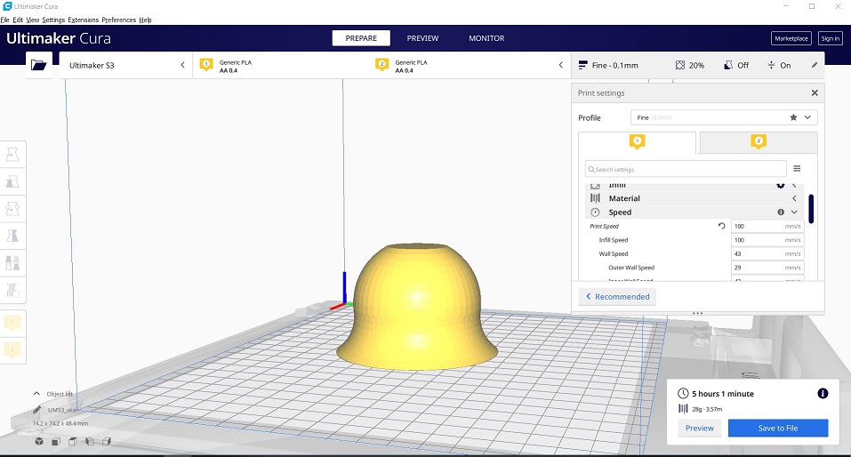
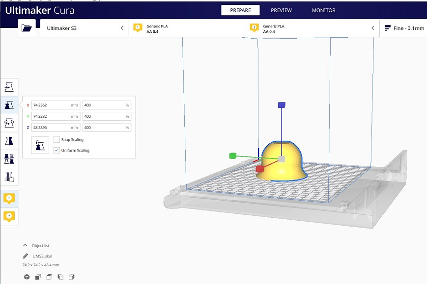
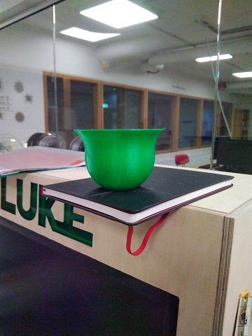
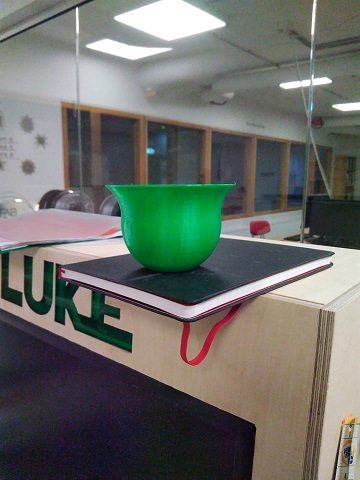

Næsta Mótorhjólið í safnið.
Verkefni 3 felur í sér að hanna og teikna, í þessu tilfelli Inventor einhversskonar stykki sem ekki er hægt að fræsa út. Því kemur 3D prentun sér vel því þar má gera hluti sem fræsarinn er ekki fær um, td holur og göt og skrítin lögun o.s.frv. Varð fyrir barðinu að hanna og teikna skál sem síðar var prentuð út í 3d því fannst mér þar koma við sögu bogar og ekki síður að sé þetta gert í fræsi þá fer gífurlegt magn til spillis af efni við að rífa það innan úr skálini.
Í þessu verkefni voru settar skorður þó svo það sé vissulega alltaf svigrúm að brjóta reglurnar. Skorðurnar samt sem áður voru að mesti tími til prentunar væri 4 klst og efnisnotkun 100g
Til að byrja með sótti ég forrtið sem notað er við 3D prentaran, en það forrit heitir CURA. Eftir að hafa horft á mynd sem ég vísa í hér að neðan um hvernig skal flytja inventor file á milli þá hófust æfingar í Cura. Það skal vista Inventor teikningu á SLT formi svo hægt sé að opna hana á Cura, en Arnar kom með frábært myndband um það hvernig nota skal Cura og er linkur á það hér að neðan. Óttaðist ég mest að stykkið væri allt of stórt og efnismikið, en þegar ég opnaði skránna í Cura hafði það minnkað 10 falt. Auðvelt er að laga það og í raun skala það á hvernig þann veg sem manni líkar. Ekki ætla ég að fjalla um í smáatriðum hvernig Cura virkar og mæli eindregið með myndbandi Arnars.
 Þegar búið var að prenta kom ýmislegt í ljós sem kannski hefði mátt betur fara. Sömuleiðis sést á myndini úr Cura að ég valdi óvart Ultimaker S3 sem prentara en í FabLab er Ultimaker 3 og þegar ég breytti yfir í hann þá styttist tíminn um helming ef ekki meira og á sama tíma þá gat ég stækkað hlutinn eftir að hafa verið búinn að minnka hann mjög mikið. í heildina tók þetta 3:45 og voru notuð 62 grömm af PLA í þetta.
Einnig langar mig að taka framm að ég hefði kannski átt að búa til support fyrir botninn, en ég ákvað að snúa skálinni öfugri í prentunun til að fá betri stuðning en prentarinn hitar plötuna og býr til sitt eigið suport sem ég braut svo af. Það sem gerðist afþví ég bjó ekki til support undir botning er að botninn sem hann situr á er mjög flottur, en inní skálini þá er botnin mjög rykkjóttur.
 

Færa úr Inventor yfir í Cura - https://www.youtube.com/watch?v=ghy1wta02yk -
Arnar útskýrir Cura - https://www.youtube.com/watch?v=BJjTwOnMQkY&feature=youtu.be
We are sorry to inform you that your photo reconstruction was unsuccessful. For a successful reconstruction, please take photographs with a minimum of 60% overlap, and ensure all images are in focus.
Það sem var í gangi hér var að ég misskildi þessa aðgerð algerlega. Ég tók fyrst myndir af hlutum liggjandi, svo reisti ég hann við, tók myndir þannig, snéri honum við o.s.frv. Forritð er ekki hrifið af því og því mistókst þetta hjá mér. Síðan hér að neðan er einhversskonar hjálparsíða frá Autodesk en eins og venjulega hjálpar slíkt rusl aldrei neitt.
Eftir að hafa tekið nýjar myndir og reynt aftur kom sama villa upp. Fór ég og skoðaði annað video sem benti á að hlutir mættu ekki vera of glansandi, en það er einmitt málið í þessu tilfelli þar sem um málband ræðir. Aftur á móti gæti þetta líka verið myndavélini á símanum mínum að kenna, enda ekki góð. Ákvað ég að prófa að mynda ostaskera og ef það gengur ekki þá fæ ég lánaða myndavél og passa birtuna betur. Þriðja taka fór fram að kvöldi og var frekar leiðinlegt að ná góðum myndum á símadrusluna mína.
Tilraunin með ostaskeran misheppnaðist líka. Kom illa út og var klukkan orðin margt. Hefði ég sennilega átt að hengja ostaskeran upp á t.d. veiðilínu en ég lét hann liggja. Eftir 3 árangurslausar tilraunir fór ég að dæmi Birgis og ákvað að skanna bók.
Í þetta skiptið skannaði ég bók. Jók fjölda mynda um helming og prófaði. Kom þetta hræðilega út og var niðurstaðan að myndavélinn væri bara alls ekki nógu góð. Sem sagt 4 árangsurslausar tilraunir
Eftir allar þessar árangsurslausu tilraunir sé ég, að það er algert lykilatriði að hafa góða myndavél og vanda vel til. Ívar td lét myndavél standa á þrífót og hlutin svo snúast. Hann ætlar að koma með myndavélina sína þar sem ég á enga og ég geri síðustu tilraun til að ná einhevrju einföldu. Annars hefur ferlið verið lædómsríkt, kynnst nýjum forritum, nýjum aðferðum og opnast ný sýn að nýja möguleika.
3D skönnun útskýrð - https://www.youtube.com/watch?v=f2-bEA3BGyc
Næsta Mótorhjólið í safnið.

kemur.

Meira
.